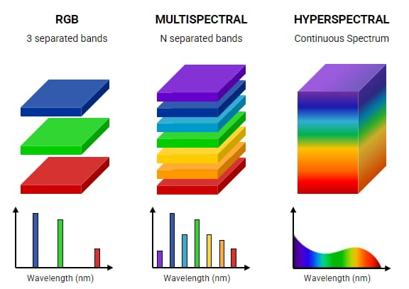
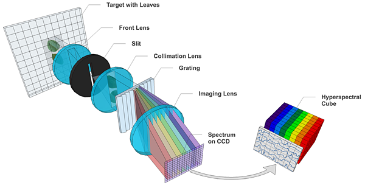

7. Hyper Spectral Imaging
7.1 What is Hyperspectral Imaging?

- Hyperspectral imaging (HSI) is a way to capture and analyze light across a wide range of wavelengths, beyond what the human eye can see. Our eyes can detect three colors of light: red, green, and blue. But with hyperspectral imaging, we can detect hundreds of different colors (wavelengths) of light, ranging from the visible to the infrared spectrum.
- Think of it like this: regular images capture light in just a few colors, but hyperspectral imaging captures information from many different parts of the light spectrum, which gives us a lot more details about the object or scene being studied.
7.2 How Does Hyperspectral Imaging Work?
- Light and Wavelengths: All objects reflect, absorb, or emit light. Hyperspectral imaging works by measuring how much light is reflected or absorbed by an object across many different wavelengths.
- Spectral Bands: A regular camera captures images in 3 bands (red, green, and blue). A hyperspectral camera can capture hundreds of bands, each one representing a narrow range of wavelengths.
- Spectral Fingerprint: Different materials reflect light differently. Each material has a unique pattern of reflecting or absorbing light, which we call a spectral fingerprint. By analyzing these fingerprints, we can identify the materials and even determine certain properties of those materials.
7.3 Hyperspectral Imaging and PACE Satellite

The PACE satellite (Plankton, Aerosol, Cloud, ocean Ecosystem) is a NASA satellite designed to study Earth's oceans, atmosphere, and ecosystems. PACE uses hyperspectral imaging to capture detailed images of our planet, especially focusing on the oceans. Here's how PACE uses hyperspectral imaging:
- Studying the Ocean: PACE can detect tiny changes in the color of the ocean, which tells scientists about the health of phytoplankton (tiny ocean plants). Phytoplankton are crucial because they absorb carbon dioxide and produce oxygen.
- Tracking Pollution: The satellite can also monitor pollution by detecting changes in water color due to chemicals, sediments, or harmful algal blooms.
- Monitoring Climate Change: By observing the reflection and absorption of sunlight by aerosols (tiny particles in the air) and clouds, PACE helps us understand how these particles affect climate change.
7.31 Example: How Hyperspectral Imaging Helps with Ocean Studies
Imagine looking at the ocean with your eyes. You see it’s blue, but that’s all the information you get. With hyperspectral imaging, we can look at hundreds of different colors of light being reflected by the ocean. This gives scientists detailed data about the types of plants, algae, or pollutants present in the water.
- For Example:
- Healthy phytoplankton reflect light differently than unhealthy ones. So, scientists can tell if the ocean ecosystem is thriving or in danger.
- Polluted water absorbs and reflects light in specific ways. HSI helps in identifying water contamination early on.
Hyperspectral imaging is like giving scientists “super-vision” to see beyond what’s visible to the naked eye, providing critical data for studying and protecting our planet!
Fun Fact!
HSI is often compared to how a prism splits white light into different colors. It helps scientists "see" all the hidden colors that tell them what's happening in nature!